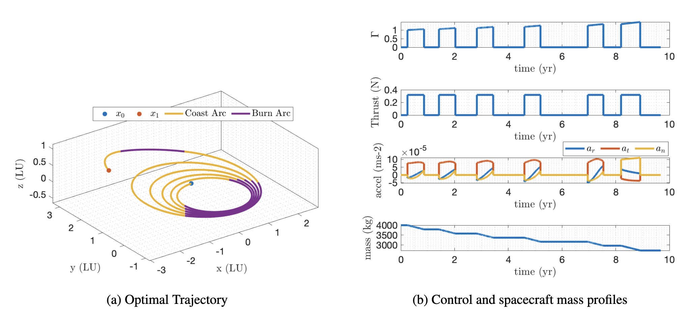
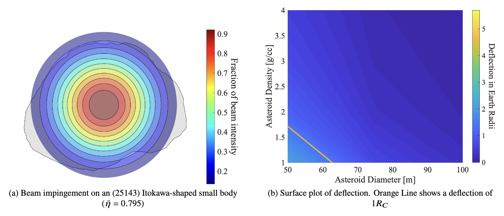

What We Work On
Research Projects
PhD Work 6 projects

Reinforcement Learning for Spacecraft Guidance
A robust guidance scheme for far-range rendezvous using RL with safety and observability considerations.
Learn more about Reinforcement Learning for Spacecraft Guidance

Improving Indirect Optimization Convergence
Scaling factors to connect energy-optimal to time-optimal and fuel-optimal problems for better convergence.
Learn more about Improving Indirect Optimization Convergence

Preliminary Mission Design Tool (PMDT)
Generates multi-target, fuel- and time-optimal tours using low-thrust propulsion with J2, drag, eclipses, and duty cycles.

Global Trajectory Optimization Competitions
Team Antipodes — indirect and convex-based tools. GTOC11: 3rd, GTOC12: 5th, GTOC13: 3rd.

Model Predictive Control for Spacecraft Guidance
Convex-based MPC for low-thrust transfer trajectory guidance with real-time performance.

Ion Beam Deflection for Asteroids
A framework assessing the feasibility of deflecting hazardous asteroids via ion beams for planetary defense.
PostDoc Work 2 projects

CORTEX: Convex Optimization for Rendezvous
A sunlight-aware, robust convex-tracking scheme for final approach in RPO missions.

GRASP: Guidance for Autonomous Servicing
End-to-end transfer and guidance framework for spacecraft servicing missions.